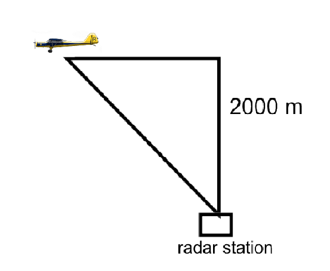
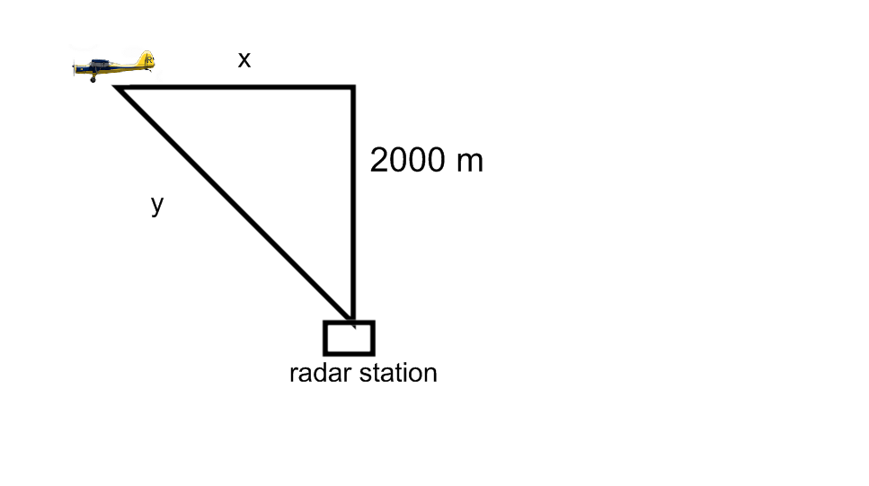
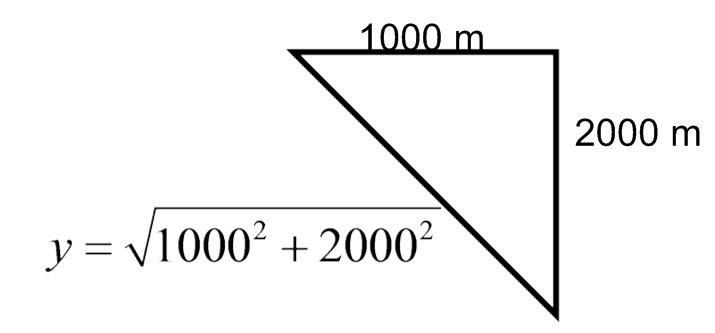

\begin{align*} y^2&=2000^2+x^2\\ 2y{\frac {dy}{dt}}&=2x{\frac {dx}{dt}}\ \text {(see $x$ and $y$ solved below)}\\ \sqrt {1000^2+2000^2}\eval {{\frac {dy}{dt}}}_{t=5}&=1000 \cdot 200 \\ \eval {{\frac {dy}{dt}}}_{t=5}&=\frac {1000 \cdot 200}{\sqrt {1000^2+2000^2}}\ \text {m/s} \end{align*}
Solving for \(x\) when \(t=5\):
We use the distance formula. Distance=rate*time, \(d=rt\). Here we have \(x=rt\). \(x=(5)(200)=1000\) m
Solving for \(y\) when \(t=5\):
